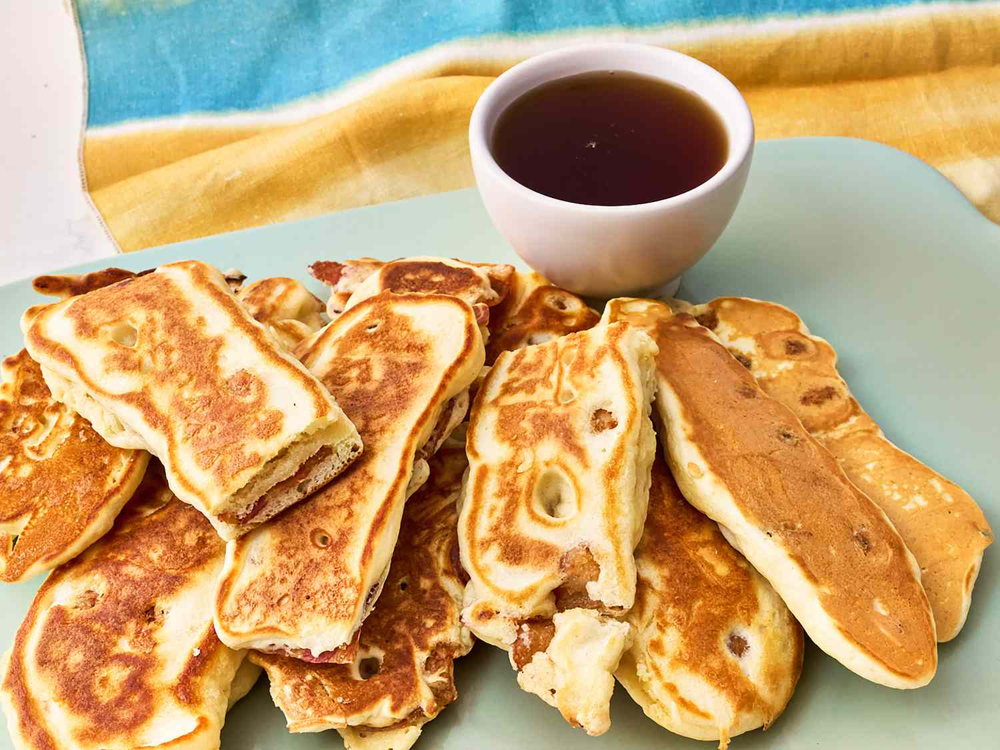

Bacon Pancake Sticks

Description
These easy bacon pancake sticks, using only 2 ingredients,
are a complete breakfast you can grab-and-go on the run.
The kids will love them!
Ingredients
- 2 Cups complete pancake mix
- 1 1/3 Cups water, plus more as needed
- 3 Tablespoons butter, divided
- 8 Slices thick cut bacon, cooked until crisp
- Syrup for dipping (optional)
Steps
- Combine pancake mix and water in a medium bowl
and stir until just blended (there may be a few lumps)
- Heat half of the butter in a large nonstick skillet over
medium heat until melted
-
Dip half of the bacon in the batter until evenly coated
and place in the skillet.
Cook undisturbed until lightly browned and slightly puffed,
about 2-3 minutes. Flip and cook for another 2-3 minutes or
until the pancake is cooked through.
-
Repeat with remaining bacon and batter.
Serve with syrup if desired for dipping.
Home